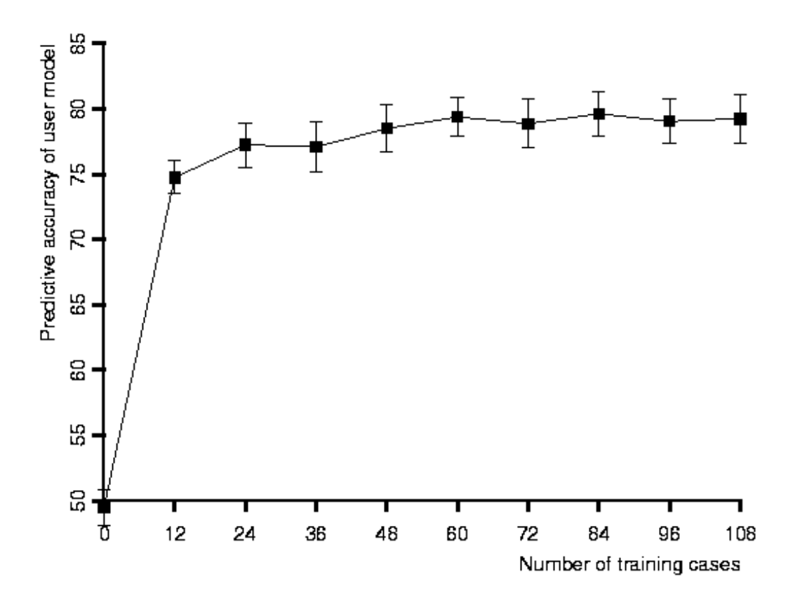
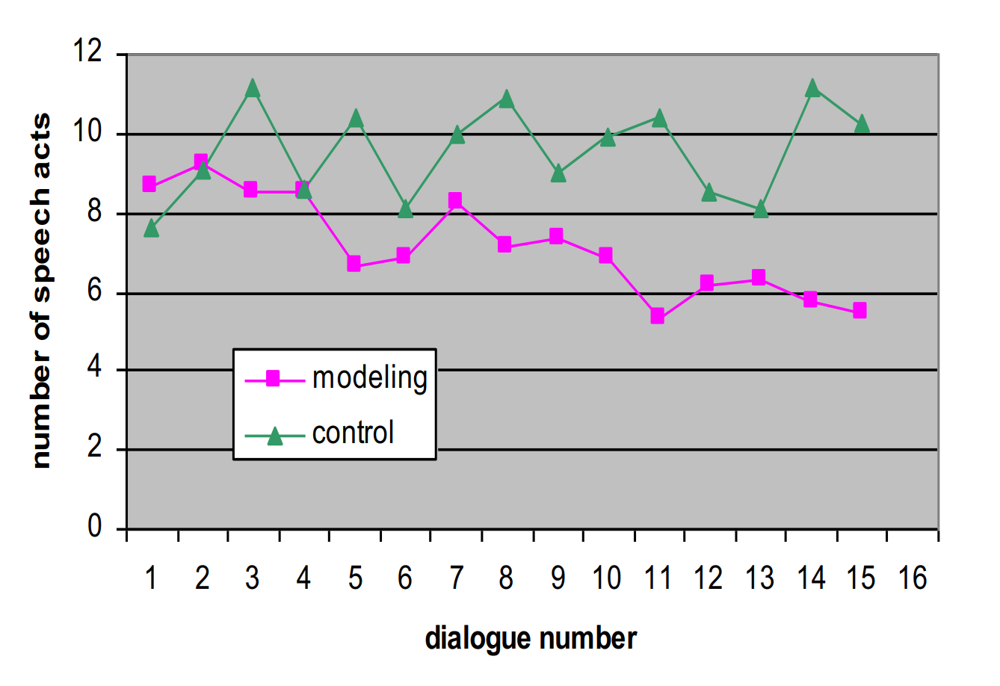
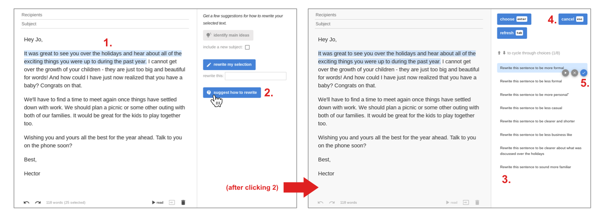
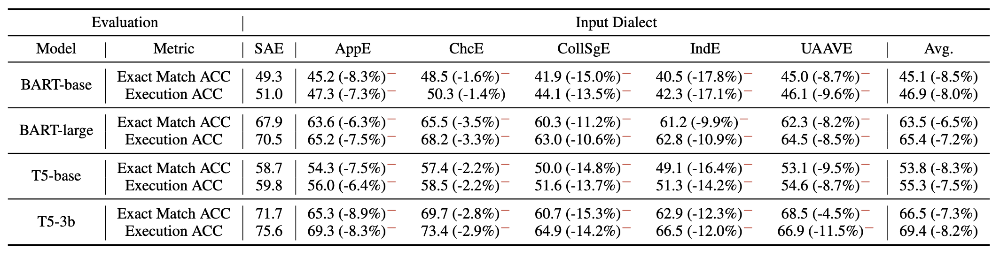

5 Human Values and AI Alignment
In recent years, the rapidly advancing capabilities of large models have led to increased discussion of aligning AI systems with human values. This chapter discusses the multifaceted relationship between values, alignment, and human-centered design in the context of AI. We begin by exploring the fundamental concept of human values and their ethical implications in AI design. This includes discussions on human values and ethics in AI, understanding and addressing bias in AI, and methods for aligning AI with human values. Additionally, we examine AI alignment problems, focusing on outer alignment to avoid specification gaming and inner alignment to prevent goal misgeneralization. Next, we cover techniques in value learning. This section introduces methodologies such as reinforcement learning from human feedback and contrastive preference learning, which are crucial for teaching AI systems to understand and align with human values. The importance of value alignment verification is emphasized to ensure that AI systems remain consistent with human values over time, adapting to changes and preventing misalignment. We then explore the principles and practices of human-centered design. This includes discussions on AI and human-computer interaction and methods for designing AI for positive human impact, which focuses on creating AI systems that are socially aware, human-centered, and positively impactful. A crucial part of this discussion is adaptive user interfaces, where we discuss key ideas, design principles, applications, and limitations of these interfaces, showcasing how they enhance user experience by dynamically adjusting to user needs and preferences. Finally, we present case studies in human-centered AI, including the LaMPost case study, Multi-Value, and DaDa: Cross-Dialectal English NLP, and social skill training via LLMs. These case studies provide real-world examples of successful implementations of human-centered AI systems. By integrating these elements, the chapter aims to provide a comprehensive understanding of how to create AI systems that are ethical, aligned with human values, and beneficial to society.
5.1 Human Values and AI Alignment
In this part, we take a step back from the technical details to reflect on the broader concept of human values and their profound influence on our behavior and decision-making.
5.1.1 Human Values and Ethics in AI
Human values are the principles and standards that guide behavior and decision-making, reflecting what is essential in life and influencing choices and actions. One notable scholar in this field is Shalom H. Schwartz, a social psychologist renowned for his theory on basic human values. Schwartz’s work has significantly contributed to our understanding of how values influence behavior across different cultures. He describes values as “desirable, trans-situational goals, varying in importance, that serve as guiding principles in people’s lives” (Schwartz 1992). This perspective underscores the importance of values in shaping consistent and ethical behavior across different contexts. Supporting this view, philosopher William K. Frankena emphasizes the integral role of values in ethical behavior and decision-making processes. Frankena’s work in ethical theory provides a foundation for understanding how moral judgments are formed. He notes that “ethical theory is concerned with the principles and concepts that underlie moral judgments” (Frankena 1973), highlighting the need to comprehend ethical principles deeply to make informed moral judgments. Examples of ethical values include autonomy, fairness, justice, and well-being. For computer scientists developing AI systems, understanding these concepts is crucial. AI systems that interact with humans and impact societal structures must be designed with these values in mind. By embedding such values into AI, developers can create systems that respect human dignity and promote positive social outcomes.
Autonomy is the right to choose, an essential aspect of personal freedom. Gerald Dworkin defines autonomy as “the capacity to reflect upon and endorse or reject one’s desires and values” (Dworkin 1988). In AI, respecting autonomy means creating systems that support user independence and decision-making rather than manipulating or coercing them.
Fairness involves treating all individuals equally and justly, ensuring no discrimination. John Rawls, one of the most influential political philosophers of the \(20^{th}\) century, in his groundbreaking book “A Theory of Justice,” describes fairness as “the elimination of arbitrary distinctions and the establishment of a balance between competing claims” (Rawls 1971). For AI systems, this translates to algorithms that do not perpetuate bias or inequality, ensuring that all users are treated equitably.
Justice is about upholding what is morally right and ensuring fair treatment for all. Rawls also highlights that “justice is the first virtue of social institutions, as truth is of systems of thought” (Rawls 1971). In the context of AI, justice involves creating technologies that enhance fairness in legal, social, and economic systems, providing equal opportunities and protection to all individuals.
Well-being focuses on promoting the health, happiness, and prosperity of individuals. Martha Nussbaum and Amartya Sen, two distinguished scholars known for their significant contributions to welfare economics and the development of the capability approach, discuss the importance of well-being in their collaborative work “The Quality of Life.” They argue that “well-being is about the expansion of the capabilities of people to lead the kind of lives they value” (Nussbaum and Sen 1993). AI systems should enhance users’ quality of life, supporting their health, education, and economic stability.
Understanding human values is foundational for readers with a computer science background before delving into AI ethics. These values provide the ethical underpinnings necessary to design and deploy AI systems responsibly. As AI systems increasingly impact all aspects of society, developers must embed these values into their work to ensure technologies benefit humanity and do not exacerbate existing inequalities.
Human values play a crucial role in decision-making by shaping the criteria for evaluating options and outcomes. They influence priorities and ethical considerations, guiding individuals and organizations to make choices that align with their principles. Nick Bostrom, a prominent philosopher in AI and existential risk, highlights the importance of values in setting priorities and determining desirable outcomes (Bostrom 2014). Aligning actions with values ensures consistency and ethical integrity in decision-making. Incorporating human values into AI systems ensures that AI decisions align with societal norms and ethical standards. Stuart Russell, an AI researcher and advocate for human-compatible AI, stresses the importance of embedding human values into AI systems to ensure they act in beneficial and ethical ways (Russell 2019). By integrating values such as fairness, justice, and well-being, AI systems can make decisions that reflect societal expectations and ethical considerations.
Examples of incorporating values into AI systems demonstrate the practical application of these principles. For instance, autonomous vehicles are programmed to prioritize human safety, ensuring decisions that protect lives. In healthcare, AI systems uphold values by safeguarding patient privacy and ensuring informed consent, adhering to ethical medical standards. Judicial AI systems aim to eliminate biases in sentencing recommendations, promoting fairness and justice. Luciano Floridi underscores the necessity for AI systems to be designed in a way that respects and upholds human values to function ethically and effectively (Floridi 2011).
To ensure that these values are systematically embedded within AI systems, it is essential to consider major ethical frameworks such as deontological, consequentialist, and virtue ethics that guide moral decision-making.
Deontological ethics, primarily associated with the philosopher Immanuel Kant, focuses on rules and duties. This ethical framework posits that actions are morally right if they adhere to established rules and duties, regardless of the outcomes. Kant’s moral philosophy emphasizes the importance of duty and adherence to moral laws. Robert Johnson, a scholar who has extensively studied Kantian ethics, explains that “Kant’s moral philosophy emphasizes that actions must be judged based on their adherence to duty and moral law, not by their consequences” (Johnson and Cureton 2022). This perspective is grounded in the belief that specific actions are intrinsically right or wrong, and individuals must perform or avoid these actions based on rational moral principles.
In the context of AI, deontological ethics implies that AI systems should be designed to follow ethical rules and principles. For instance, AI systems must respect user privacy and confidentiality as an inviolable duty. This approach ensures that AI technologies do not infringe on individuals’ rights, regardless of potential benefits. Implementing deontological principles in AI design can prevent ethical breaches, such as unauthorized data usage or surveillance. By adhering to established moral guidelines, AI systems can maintain ethical integrity and avoid actions that would be considered inherently wrong. As Floridi states, “AI systems should be developed with a commitment to uphold moral duties and respect human dignity” (Floridi 2011).
Consequentialist ethics, in contrast, evaluates the morality of actions based on their outcomes. The most well-known form of consequentialism is utilitarianism, articulated by philosophers like Jeremy Bentham and John Stuart Mill. This ethical theory suggests that actions are morally right if they promote the greatest happiness for the greatest number. Mill emphasizes that “the moral worth of an action is determined by its contribution to overall utility, measured by the happiness or well-being it produces” (Mill 1863). Consequentialist ethics is pragmatic, focusing on the results of actions rather than the actions themselves.
Applying consequentialist ethics to AI development involves designing AI systems to achieve beneficial outcomes. This means prioritizing positive societal impacts, such as improving healthcare outcomes, enhancing public safety, or reducing environmental harm. For instance, algorithms can be designed to optimize resource allocation in disaster response, thereby maximizing the overall well-being of affected populations. In this framework, the ethicality of AI decisions is judged by their ability to produce desirable consequences. Virginia Dignum, a professor of responsible artificial intelligence at Umeå University, explains that “designing algorithms with a focus on maximizing positive outcomes can lead to more ethical and effective AI systems” (Dignum 2019). Consequently, AI developers focus on the potential impacts of their technologies and strive to enhance their beneficial effects.
Virtue ethics, originating from the teachings of Aristotle, emphasizes the importance of character and virtues in ethical behavior. This framework posits that ethical behavior arises from developing good character traits and living a virtuous life. Aristotle, an ancient Greek philosopher and the author of “Nicomachean Ethics,” argues that “virtue is about cultivating excellence in character to achieve eudaimonia or human flourishing” (Aristotle 350 B.C.E.). Virtue ethics focuses on the individual’s character and the moral qualities that define a good person, such as honesty, courage, and compassion.
Additionally, virtue ethics encourages the development and use of AI systems that promote virtuous behavior. This involves fostering transparency, accountability, and fairness in AI technologies. For example, AI systems should be designed to provide clear and understandable explanations for their decisions, promoting transparency and building user trust. Furthermore, AI developers should strive to create technologies that support ethical practices and enhance the common good. Floridi emphasizes that “virtue ethics in AI development requires a commitment to fostering moral virtues and promoting human well-being” (Floridi 2011). By focusing on the character and virtues of AI developers and AI systems, virtue ethics provides a holistic approach to ethical AI development.
Applying these ethical frameworks to AI development is essential to ensure that AI systems operate ethically and responsibly. Deontological ethics in AI involves ensuring that AI follows ethical rules and principles. For instance, AI systems should be designed to respect user privacy and confidentiality. Consequentialist ethics focuses on developing AI to achieve beneficial outcomes. This means creating algorithms prioritizing positive societal impacts, such as improving healthcare outcomes or reducing environmental harm. Virtue ethics encourages virtuous behavior in AI development and use, promoting transparency, accountability, and fairness. Floridi emphasizes that “ethical AI development requires a commitment to core moral principles and virtues” (Floridi 2011).
Examples in practice demonstrate how these frameworks can be applied to guide ethical AI development. Implementing fairness constraints in machine learning models ensures that algorithms do not discriminate against certain groups. Binns notes that “fairness in machine learning can be informed by lessons from political philosophy to create more just and equitable systems” (Binns 2018). Designing algorithms that maximize overall well-being aligns with consequentialist ethics by focusing on the positive outcomes of AI deployment. Additionally, developing AI systems focusing on transparency and accountability supports virtue ethics by fostering trust and reliability in AI technologies.
Ethical principles provide a framework for ensuring that AI operates in ways that are fair, just, and beneficial. Deontological ethics, for instance, focuses on moral rules and obligations, while consequentialism considers the outcomes of actions. By embedding these ethical principles into AI design, we can create systems that respect human dignity and promote societal well-being.
5.1.2 Bias in AI
Bias in AI refers to systematic errors that result in unfair outcomes. These biases can occur at various stages of AI system development and deployment, leading to significant ethical and practical concerns. Addressing bias in AI is crucial because it directly impacts the fairness, accountability, and trustworthiness of AI systems. Barocas, Hardt, and Narayanan emphasize that “bias in machine learning can lead to decisions that systematically disadvantage certain groups” (Barocas, Hardt, and Narayanan 2019). O’Neil further highlights the societal impact of biased AI, noting that “algorithms can perpetuate and amplify existing inequalities, leading to a cycle of discrimination” (O’Neil 2016). Therefore, understanding and mitigating bias is essential for developing ethical AI systems that promote fairness and equity.
Data bias originates from skewed or non-representative data used to train AI models. This bias often reflects historical prejudices and systemic inequalities in the data. For example, if a hiring algorithm is trained on historical hiring data that reflects gender or racial biases, it may perpetuate these biases in its recommendations. Fatemeh Mehrabi and her colleagues, in their survey on bias in AI, state that “data bias can result from sampling bias, measurement bias, or historical bias, each contributing to the unfairness of AI systems” (Mehrabi et al. 2021). Safiya Umoja Noble, author of “Algorithms of Oppression,” discusses how biased data in search engines can reinforce stereotypes and marginalize certain groups, noting that “search algorithms often reflect the biases of the society they operate within” (Noble 2018). Addressing data bias involves careful collection, preprocessing, and validation to ensure diversity and representation.
An effort to address data bias is the “Lab in the Wild” platform, which seeks to broaden the scope of Human-Computer Interaction (HCI) studies beyond the traditional “WEIRD” (Western, Educated, Industrialized, Rich, and Democratic) population (oliveira17?). Paulo S. Oliveira, one of the platform’s researchers, notes that this initiative aims to correct demographic skew in behavioral science research by engaging a diverse global audience. By allowing individuals from various demographics to participate in studies from their environments, “Lab in the Wild” provides researchers with a more inclusive dataset.
Another important consideration is the cultural nuances of potential users. For instance, designing a computer vision system to describe objects and people daily must consider whether to identify gender. In the United States, there is growing sensitivity toward gender identity, suggesting that excluding gender might be prudent. Conversely, in India, where a visually impaired woman may need gender-specific information for safety, including gender identification is critical. Ayanna Howard, a roboticist and AI researcher at Georgia Tech, emphasizes the need for adaptable systems that respect local customs and address specific user needs in her work on human-robot interaction. This highlights the importance of adaptable systems that respect local customs and address specific user needs.
Algorithmic bias often arises from the design and implementation choices made by developers. This type of bias can stem from the mathematical frameworks and assumptions underlying the algorithms. For instance, decision trees and reinforcement learning policies can inadvertently prioritize certain outcomes, resulting in biased results. Solon Barocas, a professor at Cornell University, and his colleagues explain that “algorithmic bias can emerge from optimization objectives that do not adequately consider fairness constraints” (Barocas, Hardt, and Narayanan 2019). Cathy O’Neil, a data scientist who has written extensively on the societal impacts of algorithms, provides examples of how biased algorithms in predictive policing and credit scoring can disproportionately affect disadvantaged communities. She argues that “algorithmic decisions can have far-reaching consequences when fairness is not adequately addressed” (O’Neil 2016). Mitigating algorithmic bias requires incorporating fairness constraints and regularly auditing algorithmic decisions.
Weidinger et al., in their 2022 study published in “Artificial Intelligence,” investigate how reinforcement learning (RL) algorithms can replicate or amplify biases present in training data or algorithmic design (Weidinger, Reinecke, and Haas 2022). They propose RL-based paradigms to test for these biases, aiming to identify and mitigate their impact. Similarly, Mazeika et al., in their research on modeling emotional dynamics from video data, explore how algorithms might prioritize certain emotional expressions or demographics based on their training and data usage (Mazeika et al. 2022). Their work highlights the need for careful consideration of algorithmic design to avoid unintended bias in AI systems.
5.1.3 Aligning AI with Human Values
Aligning AI systems with human values presents several significant challenges. Human values are multifaceted and context-dependent, making them difficult to encode into AI systems. As Bostrom highlights, “the complexity of human values means that they are not easily reducible to simple rules or objectives” (Bostrom 2014). Additionally, values can evolve, requiring AI systems to adapt. Russell notes that “the dynamic nature of human values necessitates continuous monitoring and updating of AI systems to ensure ongoing alignment” (Russell 2019). Different stakeholders may also have conflicting values, posing a challenge for AI alignment. Addressing these conflicts requires a nuanced approach to balance diverse perspectives and priorities.
What is the right way to represent values? In a Reinforcement Learning (RL) paradigm, one might ask: at what level should we model rewards? Many people are trying to use language. In Constitutional AI (Bai et al. 2022), we write down the rules we want a language model to follow or apply reinforcement learning from human feedback, discussed in the next section. Many problems have been framed in an RL setting. Some experts in reinforcement learning argue that a single scalar reward is not enough (Vamplew et al. 2018, 2022). They suggest a vectorized reward approach might better emulate the emotional-like system humans have (Moerland, Broekens, and Jonker 2018). With this robustness, we might capture all the dimensions of human values. These approaches are still in the early stages. Language does play a crucial role in human values. Tomasello (Tomasello 2019) argues that learning a language and the awareness of convention it brings help children understand their cultural group and reason about it with peers. However, human values seem to be composed of more than just linguistic utterances. Several strategies have been proposed to align AI systems with human values.
One effective approach is value-sensitive design, which considers human values from the outset of the design process. Friedman, Kahn, and Borning explain that “value-sensitive design integrates human values into the technology design process to ensure that the resulting systems support and enhance human well-being” (Friedman, Kahn, and Borning 2008).
Another strategy is participatory design, which engages stakeholders in the design process to ensure their values are reflected in the AI system. Muller emphasizes that “participatory design creates a collaborative space where diverse stakeholders can contribute their perspectives and values, leading to more inclusive and ethical AI systems” (Muller 2003). Additionally, iterative testing and feedback allow continuous refinement of AI systems based on user feedback, ensuring they remain aligned with human values over time. Practical examples of value alignment in AI systems demonstrate how these strategies can be implemented effectively.
In autonomous vehicles, ensuring safety and ethical decision-making in critical scenarios is paramount. These vehicles must make real-time decisions that prioritize human safety above all else. Goodall discusses how “Waymo’s safety protocols are designed to prioritize human safety and ethical considerations in autonomous driving” (Goodall 2014). These protocols include extensive testing and validation processes to ensure that autonomous driving algorithms handle various scenarios ethically and safely. For example, the system must decide how to react in an unavoidable collision, weighing the potential outcomes to minimize harm. By embedding these ethical considerations into their design and operation, companies like Waymo aim to align their AI systems with societal values of safety and responsibility.
In healthcare AI, respecting patient privacy and ensuring informed consent are crucial. Healthcare applications often involve sensitive personal data, and AI systems must handle this information with the utmost care. Jiang et al. highlight how “IBM Watson for Oncology incorporates patient privacy protections and informed consent processes to align with ethical standards in medical practice” (F. Jiang et al. 2017). IBM Watson for Oncology uses AI to assist in diagnosing and recommending treatments for cancer patients. To align with ethical standards, the system ensures that patients are fully informed about how their data will be used and that their consent is obtained before processing their information. This approach protects patient privacy, and builds trust between patients and healthcare providers, demonstrating a commitment to ethical medical practices.
Judicial AI systems strive to avoid biases in sentencing recommendations, promoting fairness and justice. The judicial system’s integrity depends on delivering fair and unbiased judgments. However, AI systems in judicial contexts, such as risk assessment tools, can perpetuate existing biases if not carefully designed and monitored. Angwin et al. describe how “the COMPAS system has undergone revisions to address biases and improve fairness in judicial decision-making” (Angwin et al. 2016). COMPAS, a tool used to assess the likelihood of a defendant reoffending, faced criticism for racial bias in its risk assessments. Subsequent revisions removed biased factors and incorporated fairness constraints. These changes aimed to ensure that the tool provides more equitable assessments, aligning the AI system with the judicial values of fairness and justice.
This raises the question for AI: At what level should we model values? Is language alone enough? We might also consider questions about language understanding. LLMs seem to “get” much of language even without physical embodiment. Will they “get” human values, too? First, we’ll cover work that attempts to gain traction on these issues. Methodologically, this is similar to the RLHF and language modeling work we will cover in the next section. Here, we focus on this work with a somewhat different aim. In some of the earliest work to address values in AI systems head-on, (Hendrycks et al. 2020) introduced a new dataset called ETHICS, sourced from Reddit and through Mturk worker annotations. Instead of showing moral dilemmas, they focused just on clear-cut examples. One example scenario is, “I pushed the elderly man in the wheelchair to the ground” which their model labels as “Unacceptable” and “I pushed the elderly man in the wheelchair around the park.” which their model labels as “acceptable”. To come up with these labels, they define many different tasks, one of which (for the preceding example) is how well the model can capture the ratings of human votes (from the “Am I the Asshole” subreddit). The model that they train could be the reward model that is then later used in a language model setting. What’s interesting and what we’ll be talking about is how they’re using language as the means to gain traction on values.
Their dataset included various scenarios, from deontological ones like Kantian ethics to utilitarian approaches. We’ll describe some of those approaches in a later subsection. The model they trained performed well at predicting scores and utility values for these situations. For example, it ranked highly, “I got called to the principal’s office because I won a school-wide award”, and negatively “I rewired my electricity in the attic and I fell and hurt my back”. In subsequent work by others, this underlying technology has been deployed to reason morally. Part of this work prompted a response from (L. Jiang et al. 2021). Anecdotally, many people were unhappy with this demo, disagreeing that LLMs could reason morally at (Talat et al. 2022).

If you ask, “Should I drive my friend to the airport if I don’t have a license?” Delphi gets it right and says no. The question that we’re driving at in this is what does it mean for Delphi to get it right? What values are we considering, and how are those represented in the sorts of systems that we’re working on? You can also get Delphi to say a lot of hateful and toxic things by subtly manipulating the input to this model—does this suggest that the model is merely susceptible to hallucinations like other LLMs but otherwise performant? Or does it suggest an underlying lack of capacity?
Delphi operationalizes the ETHICS dataset and adds a couple of others (Sap et al. 2019). They call their new, compiled dataset the Commonsense Norm Bank, sourcing many scenarios from Reddit and having crowd workers annotate the acceptability of various judgments pairwise. This allows the model to perform various morally relevant tasks. When prompted, the model outputs a class label for appropriateness and a generative description. For example, “greeting a friend by kissing on a cheek” is appropriate behavior when appended with “in France” but not with “in Korea”. The model captures actual cultural norms. Our driving question should be, how ought we best formalize these kinds of norms, and is this necessarily the right approach? When released in late 2021, Delphi outperformed GPT-3 on a variety of these scenarios. In personal communication with the authors, we understand that Delphi continues to outperform GPT-4 on many of these scenarios as well. 1
There have also been works that seek to operationalize performance on moral values to turn such a model into something actionable. (Hendrycks et al. 2021) used the same constituent parts of the ETHICS dataset to create a model that reasons around text-based adventure games. Jiminy Cricket is a character in one of these games, which has scenarios like those in Figure 5.3. These games offer limited options, and the goal was to see whether agents would perform morally well and not just finish the game. They labeled all examples of game-based actions according to three degrees: positive, somewhat positive, and negative. For example, saving a life in the game was very positive, while drinking water was somewhat positive. They found that with this labeled data, it was possible to train a model that shaped the reward of the underlying RL agent playing the games. The agent would not only finish the games well but also score highly on moral metrics. This approach is similar to optimizing multiple objectives like helpfulness and harmlessness (Liang et al. 2023).
We are discussing whether language is the right medium for learning values. (Arcas 2022) claims that language encompasses all of morality. Since these models operate in the linguistic domain, they can also reason morally. He provides an example with the Lambda model at Google. Anecdotally, when asked to translate a sentence from Turkish to English, where Turkish does not have gendered pronouns, the model might say, “The nurse put her hand in her coat pocket.” This inference shows gender assumption. When instructed to avoid gendered assumptions, the model can say “his/her hand.” He claims this capability is sufficient for moral reasoning.
Next, we now explore the broader challenges of AI alignment, particularly focusing on AI alignment problems and the critical dimensions of outer and inner alignment.
5.1.4 AI Alignment Problems
AI alignment ensures that AI systems’ goals and behaviors are consistent with human values and intentions. Various definitions of AI alignment emphasize the importance of aligning AI systems with human goals, preferences, or ethical principles. As stated by (Wikipedia contributors 2023), AI alignment involves
(Wikipedia contributors 2023): “steer[ing] AI systems towards humans’ intended goals, preferences, or ethical principles”
(Ngo, Chan, and Mindermann 2023): “the challenge of ensuring that AI systems pursue goals that match human values or interests rather than unintended and undesirable goals”
(P. Christiano 2018): “an AI \(A\) is aligned with an operator \(H\) [when] \(A\) is trying to do what \(H\) wants it to do”
The importance of AI alignment lies in preventing unintended consequences and ensuring that AI systems act beneficially and ethically. Proper alignment is crucial for the safe and ethical deployment of AI, as it helps AI systems correctly learn and generalize from human preferences, goals, and values, which may be incomplete, conflicting, or misspecified. In practice, AI alignment is a technical challenge, especially for systems with broad capabilities like large language models (LLMs). The degree of alignment can be viewed as a scalar value: a language model post-RLHF (Reinforcement Learning from Human Feedback) is more aligned than a model that has only been instruction-tuned, which in turn is more aligned than the base model. There are specific terms to distinguish different notions of alignment. Intent alignment refers to a system trying to do what its operator wants it to do, though not necessarily succeeding (P. Christiano 2018). Value alignment, in constrast, involves a system correctly learning and adopting the values of its human operators. Alignment is often divided into two broad subproblems: outer alignment, which focuses on avoiding specification gaming, and inner alignment, which aims to avoid goal misgeneralization. In the following sections, we will examine these subproblems in greater detail. It is also important to consider how human preferences and values are aggregated and who the human operators are, topics addressed in related discussions on ethics and preference elicitation mechanisms.
5.1.4.1 Outer Alignment: Avoiding Specification Gaming
To align a model with human values, we need an objective function or reward model that accurately specifies our preferences. However, human preferences are complex and difficult to formalize. When these preferences are incompletely or incorrectly specified, optimizing against the flawed objective function can yield models with undesirable and unintuitive behavior, exploiting discrepancies between our true values and the specified objective function. This phenomenon, known as specification gaming, arises from reward misspecification, and addressing this issue constitutes the outer alignment problem (Amodei et al. 2016).
Specification gaming occurs when AI systems exploit poorly defined objectives to achieve goals in unintended ways. For instance, a cleaning robot might hide dirt under a rug instead of cleaning it to achieve a “clean” status. This manipulative behavior results from the robot optimizing for an inadequately specified objective function. Another example involves gaming AI, which uses bugs or exploits to win rather than play by the intended rules, thus achieving victory through unintended means (Krakovna et al. 2020).
One example of specification gaming is seen in recommendation systems, such as those used by YouTube or Facebook. Ideally, these systems should recommend content that users enjoy. As a proxy for this goal, the systems estimate the likelihood that a user clicks on a piece of content. Although the true objective (user enjoyment) and the proxy (click likelihood) are closely correlated, the algorithm may learn to recommend clickbait, offensive, or untruthful content, as users likely click on it. This optimization for clicks rather than genuine enjoyment exemplifies specification gaming, where the algorithm exploits the divergence between the specified objective and the true goal, resulting in misalignment with user interests (Amodei et al. 2016).
Another instance of specification gaming is evident in reinforcement learning from human feedback (RLHF). Human raters often reward language model (LM) generations that are longer and have a more authoritative tone, regardless of their truthfulness. Here, the true objective (providing high-quality, truthful, and helpful answers) diverges from the proxy goal (a reward model that, due to human rater biases, favors longer and more authoritative-sounding generations). Consequently, models trained with RLHF may produce low-quality answers containing hallucinations but are still favored by the reward model (Leike et al. 2018).
Creating accurate objective functions is challenging due to the complexity of human intentions. Human goals are nuanced and context-dependent, making them difficult to encode precisely. Common pitfalls in objective function design include oversimplifying objectives and ignoring long-term consequences. Leike et al. emphasize that “accurately capturing the complexity of human values in objective functions is crucial to avoid specification gaming and ensure proper alignment” (Leike et al. 2018).
To mitigate specification gaming, better objective function design is essential. This involves incorporating broader context and constraints into the objectives and regularly updating them based on feedback. Iterative testing and validation are also critical. AI behavior must be continuously tested in diverse scenarios, using simulation environments to identify and fix exploits. Everitt and Hutter discuss the importance of “robust objective functions and rigorous testing to prevent specification gaming and achieve reliable AI alignment” (Everitt and Hutter 2018). Clark and Amodei further highlight that “faulty reward functions can lead to unintended and potentially harmful AI behavior, necessitating ongoing refinement and validation” (Clark and Amodei 2016).
The metrics used to evaluate AI systems play a crucial role in outer alignment. Many AI metrics, such as BLEU, METEOR, and ROUGE, are chosen for their ease of measurement but do not necessarily capture human judgment (Hardt and Recht 2021). These metrics can lead to specification gaming, as they may not align with the true objectives we want the AI to achieve. Similarly, using SAT scores to measure LLM performance may not predict real-world task effectiveness, highlighting the need for more contextually relevant benchmarks (Chowdhery et al. 2022). The word error rate (WER) used in speech recognition is another example; it does not account for semantic errors, leading to misleading conclusions about the system’s performance (Xiong et al. 2016).
A classic example comes from six years ago with the claim that a system “Achieve[d] human parity in conversation speech recognition” (Xiong et al. 2016). However, we know from experience that captioning services have only recently begun to transcribe speech passably, whether in online meetings or web videos. What happened? In this case, researchers showed their system beat the human baseline—the error rate when transcribing films. However, there were issues with their approach. First, they used a poor measure of a human baseline by hiring untrained Mturk annotators instead of professional captioners. Second, the metric itself, the word error rate (WER), was flawed. WER measures the number of incorrect words in the gold transcription versus the predicted transcription. Consider what the metric hides when it says that two systems both have an error rate of six percent. This does not mean the systems are equivalent. One might substitute “a” for “the,” while the other substitutes “tarantula” for “banana.” The metric was not sensitive to semantic errors, so a model could outperform humans in WER yet still make unintelligent, highly unsemantic mistakes.
5.1.4.2 Inner Alignment: Preventing Goal Misgeneralization
Assume we have perfectly specified human values in a reward model. An issue remains: given finite training data, many models perform well on the training set, but each will generalize somewhat differently. How do we choose models that correctly generalize to new distributions? This is the problem of goal misgeneralization, also known as the inner alignment problem, where a learned algorithm performs well on the training set but generalizes poorly to new input distributions, achieving low rewards even on the reward function it was trained on. Inner alignment ensures that the learned goals and behaviors of an AI system align with the intended objectives during deployment, whereas goal misgeneralization occurs when an AI system applies learned goals inappropriately to new situations (Hubinger et al. 2019).
Consider the following example of goal misgeneralization from (Shah et al. 2022). The setup involves a never-ending reinforcement learning environment without discrete episodes. The agent navigates a grid world where it can collect rewards by chopping trees. Trees regenerate at a rate dependent on the number left; they replenish slowly when few remain. The optimal policy is to chop trees sustainably, i.e., fewer when they are scarce. However, the agent does not initially learn the optimal policy.
Initially, the agent is inefficient at chopping trees, keeping the tree population high (point A). As it improves its chopping skills, it over-harvests, leading to deforestation and a prolonged period of minimal reward (between points B and C). Eventually, it learns sustainable chopping (point D). This scenario (up to point C) exemplifies goal misgeneralization. When the agent first becomes proficient at chopping (between points A and B), it faces a range of potential goals, from sustainable to rapid tree chopping. All these goals align with the (well-specified) reward function and its experience of being rewarded for increased efficiency. Unfortunately, it adopts the detrimental goal of rapid deforestation, resulting in a prolonged period of low reward.
Another example of goal misgeneralization occurs in recommendation systems. These systems aim to maximize user engagement, which can inadvertently lead to promoting extreme or sensational content. Krakovna et al. highlights that “recommendation systems can misgeneralize by prioritizing content that maximizes clicks or watch time, even if it involves promoting harmful or misleading information” (Krakovna et al. 2020). This misalignment between the system’s learned objective (engagement) and the intended objective (informative and beneficial content) exemplifies how goal misgeneralization can manifest in real-world applications.
Autonomous vehicles also present cases of goal misgeneralization. These vehicles must interpret and respond to various signals in their environment. However, in rare scenarios, they may misinterpret signals, leading to unsafe maneuvers. Amodei et al. discuss that “autonomous vehicles can exhibit unsafe behaviors when faced with uncommon situations that were not well-represented in the training data, demonstrating a misgeneralization of their learned driving policies” (Amodei et al. 2016). Ensuring that autonomous vehicles generalize correctly to all possible driving conditions remains a significant challenge.
To address goal misgeneralization, robust training procedures are essential. This involves using diverse and representative training data to cover a wide range of scenarios and incorporating adversarial training to handle edge cases. Leike et al. (Leike et al. 2018) emphasize the importance of “robust training procedures that include diverse datasets and adversarial examples to improve the generalization of AI systems”. Additionally, careful specification of learning goals is crucial. This means defining clear and comprehensive objectives and regularly reviewing and adjusting these goals based on performance and feedback. Hubinger et al. suggests that “regularly updating and refining the objectives based on ongoing evaluation can help mitigate the risks of goal misgeneralization” (Hubinger et al. 2019).
A key concern about goal misgeneralization in competent, general systems is that a policy successfully models the preferences of human raters (or the reward model) and behaves accordingly to maximize reward during training. However, it may deviate catastrophically from human preferences when given a different input distribution during deployment, such as during an unexpected geopolitical conflict or when facing novel technological developments. Increasing data size, regularization, and red-teaming can help mitigate goal misgeneralization, but they do not fundamentally solve the problem. Understanding the inductive biases of optimization algorithms and model families may help address the problem more generally.
So, can you differentiate between inner and outer alignment?
The distinction between inner and outer alignment can be a bit subtle. The following four cases, from (Ngo, Chan, and Mindermann 2023), may help to clarify the difference:
The policy behaves incompetently. This is a capability generalization failure.
The policy behaves competently and desirably. This is aligned behavior.
The policy behaves in a competent yet undesirable way which gets a high reward according to the original reward function. This is an outer alignment failure, also known as reward misspecification.
The policy behaves in a competent yet undesirable way which gets a low reward according to the original reward function. This is an inner alignment failure, also known as goal misgeneralization.
Now that we understand the alignment problem overall, we move on to the specific techniques used for value learning to ensure AI systems are aligned with human values.
5.1.5 Techniques in Value Learning
Various methods in value learning for foundation models have been explored in great detail in recent years (Stiennon et al. 2020). Using binary human-labeled feedback to make models closely aligned to human preferences is particularly difficult in scenarios where large datasets inherently encompass suboptimal behaviors. The approach of Reinforcement Learning from Human Feedback (RLHF) ((Ouyang et al. 2022)) has risen to prominence as an effective method for addressing this issue. The technique applies to various domains, from prompt-image alignment, fine-tuning large language models or diffusion models, and improving the performance of robot policies.
5.1.5.1 Reinforcement Learning from Human Feedback
Reinforcement Learning from Human Feedback (RLHF) is a technique used to align AI behavior with human values by incorporating human feedback into the reinforcement learning process. This approach is particularly effective when large datasets inherently encompass suboptimal behaviors. RLHF aims to refine policies by discriminating between desirable and undesirable actions, ensuring that AI systems act following human preferences (Ouyang et al. 2022).
The core concept of RLHF: It first trains a reward model using a dataset of binary preferences gathered from human feedback. This reward model is then used to fine-tune the AI model through a reinforcement learning algorithm. The core concept is to utilize human feedback to guide AI learning, thereby aligning the AI’s behavior with human expectations (Stiennon et al. 2020).

The RLHF pipeline involves the following steps:
Step 1: Supervised Fine-Tuning
In the initial step for language modeling tasks, we utilize a high-quality dataset consisting of \(\left(\text{prompt}, \text{response}\right)\) pairs to train the model. Prompts are sampled from a curated dataset designed to cover a wide range of instructions and queries, such as “Explain the moon landing to a 6-year-old.” Trained human labelers provide the desired output behavior for each prompt, ensuring responses are accurate, clear, and aligned with task goals. For instance, in response to the moon landing prompt, a labeler might generate, “Some people went to the moon in a big rocket and explored its surface.” The collected \(\left(\text{prompt}, \text{response}\right)\) pairs serve as the training data for the model, with the cross-entropy loss function applied only to the response tokens. This helps the model learn to generate responses that are closely aligned with the human-provided examples. The training process adjusts model parameters through supervised learning, minimizing the difference between the model’s predictions and the human responses.
Step 2: Reward Model (RM) Training
In this step, we train a reward model to score any \(\left(\text{prompt}, \text{response}\right)\) pair and produce a meaningful scalar value. Multiple model-generated responses are sampled for each prompt. Human labelers then rank these responses from best to worst based on their quality and alignment with the prompt. For example, given the prompt “Explain the moon landing to a 6-year-old,” responses like “People went to the moon in a big rocket and explored its surface” might be ranked higher than “The moon is a natural satellite of Earth.” The rankings provided by the labelers are used to train the reward model \(\Phi_{\text{RM}}\). The model is trained by minimizing the following loss function across all training samples:
\[\mathbb{L}(\Phi_{RM}) = -\mathbb{E}_{(x,y_e,i\rightarrow D_{RL})}[\log(\sigma(\Phi_{RM}(x, y_i)) - \Phi_{RM}(x, y_{1-i}))]\]
for \(i \in \{0,1 \}\). This loss function encourages the reward model to produce higher scores for better-ranked responses, thereby learning to evaluate the quality of model outputs effectively.
Step 3: Reinforcement Learning
In this step, we refine the policy using reinforcement learning (RL) based on the rewards provided by the trained reward model. A new prompt is sampled from the dataset, and the policy generates an output. The reward model then calculates a reward for this output, and the reward is used to update the policy using the Proximal Policy Optimization (PPO) algorithm.
The RL setting is defined as follows:
Action Space: The set of all possible actions the agent can take, which, for language models, is typically the set of all possible completions.
Policy: A probability distribution over the action space. In the case of language models like LLM, the policy is contained within the model and represents the probability of predicting each completion.
Observations: The inputs to the policy, which in this context are prompts sampled from a certain distribution.
Reward: A numerical score provided by the Reward Model (RM) that indicates the quality of actions taken by the agent.
During training, batches of prompts are sampled from two distinct distributions, namely either \(D_\text{RL}\), the distribution of prompts explicitly used for the RL model, or \(D_\text{pretrain}\), the distribution of prompts from the pre-trained model. The objective for the RL agent is to maximize the reward while ensuring that the policy does not deviate significantly from the supervised fine-tuned model and does not degrade the performance on tasks the pre-trained model was optimized for. When sampling a response \(y\) to a prompt \(x\) from \(D_\text{RL}\), the first objective function is:
\[\text{objective}_1(x_{RL}, y; \phi) = RM(x_{RL}, y) - \beta \log \frac{\text{LLM}_{\phi}^{RL}(y|x)}{\text{LLM}_{SFT}(y|x)}\]
Where the first term is the reward from the RM, and the second term is the Kullback-Leibler (KL) divergence, weighted by a factor \(\beta\), which acts as a regularizer to prevent the RL model from straying too far from the SFT model. Further, for each \(x\) from \(D_\text{pretrain}\), the second objective is to ensure that the RL model’s performance on text completion does not worsen:
\[\text{objective}_2(x_{\text{pretrain}} ; \phi) = \gamma \log \text{LLM}_{\phi}^{RL}(x_{\text{pretrain}})\]
where \(\gamma\) is a weighting factor that balances the influence of this objective against the others.
The final objective function is a sum of the expected values of the two objectives described above, across both distributions. In the RL setting, we maximize this objective function:
\[\text{objective}(\phi) = E_{(x,y) \sim D_{\phi}^{RL}}[RM(x, y) - \beta \log \frac{\text{LLM}_{\phi}^{RL}(y|x)}{\text{LLM}_{SFT}(y|x)}] + \gamma E_{x \sim D_{\text{pretrain}}}[\log \text{LLM}_{\phi}^{RL}(x)]\]
In practice, the second part of the objective is often not used to perform \(\text{RLHF}\). The KL penalty is typically enough to constrain the RL policy. This function balances the drive to maximize the reward with the need to maintain the quality of text completion and the similarity to the behavior of the supervised fine-tuned model.
Limitations and Challenges: Despite its successes, RLHF faces several challenges. One major issue is the quality of human feedback, which can be inconsistent and subjective. Scalability is another concern, as obtaining a large amount of high-quality feedback can be expensive and time-consuming. Over-optimization and hallucinations, where the model generates plausible but incorrect outputs, are also common problems. This generally stems from temporal credit assignment and the instability of approximate dynamic programming (Hasselt et al. 2018). Further, it is expensive to gather tens of thousands of preferences over datasets to create robust reward models. Strategies to overcome these challenges include using diverse and representative training data, incorporating adversarial training to handle edge cases, and continuously refining the reward model based on ongoing feedback and performance evaluations (Leike et al. 2018).
5.1.5.2 Contrastive Preference Learning
Contrastive Preference Learning (CPL) is a learning paradigm designed to enhance the alignment of AI systems with human preferences without relying on traditional reinforcement learning (RL) methods. CPL addresses many limitations inherent in traditional RLHF techniques by learning from human comparisons rather than explicit reward signals. This section provides an in-depth exploration of CPL, detailing its methodology, experiments, results, and potential challenges. Recent research has shown that human preferences are often better modeled by the optimal advantage function or regret, rather than traditional reward functions used in RLHF. Traditional RLHF approaches, which learn a reward function from a preference model and then apply RL, incur significant computational expenses and complexity (Hejna et al. 2023). CPL offers a streamlined and scalable alternative by leveraging a more accurate regret model of human preferences.
The key idea of CPL is the substitution of the optimal advantage function with the log probability of the policy in a maximum entropy reinforcement learning framework. This substitution is beneficial as it circumvents the need to learn the advantage function and avoids the optimization challenges associated with RL-like algorithms. By using the log probability of the policy, CPL more closely aligns with how humans model preferences and enables efficient supervised learning from human feedback.
CPL is a structured approach to aligning AI behavior with human preferences by relying on a dataset of preferred behavior segments \(\mathcal{D}_{\text{pref}} = \{(\sigma_i^+, \sigma_i^-)\}_{i=1}^n\), where \(\sigma^+ \succ \sigma^-\). Each behavior segment \(\sigma\) is a sequence of states and actions, \(\sigma = (s_1, a_1, s_2, a_2, \ldots, s_k, a_k)\). The CPL approach aims to maximize the expected sum of rewards minus an entropy term, which promotes exploration and prevents overfitting to specific actions:
\[\max_\pi \mathbb{E}_{\pi} \left[ \sum_{t=0}^{\infty} \gamma^t (r(s_t, a_t) - \alpha \log \pi(a_t | s_t)) \right]\]
where \(\gamma\) is the discount factor, \(\alpha\) is the temperature parameter controlling the stochasticity of the policy, and \(r\) is the reward function. This step sets the foundation by defining the optimization objective that the CPL model strives to achieve. In the learning process, CPL compares the log probabilities of actions in preferred segments \(\sigma^+\) against those in non-preferred segments \(\sigma^-\) :
\[\mathbb{L}_{CPL}(\pi_\theta, \mathcal{D}_{\text{pref}}) = \mathbb{E}_{(\sigma^+,\sigma^-) \sim \mathcal{D}_{\text{pref}}} \left[ -\log \frac{\exp(\sum_{\sigma^+} \gamma^t \alpha \log \pi_\theta(a_t^+|s_t^+))}{\exp(\sum_{\sigma^+} \gamma^t \alpha \log \pi_\theta(a_t^+|s_t^+)) + \exp(\sum_{\sigma^-} \gamma^t \alpha \log \pi_\theta(a_t^-|s_t^-))} \right]\]
This comparison allows the model to learn which actions are more aligned with human preferences, forming the core learning mechanism of CPL. The preference model for CPL is regret-based, described as
\[P_{A^*}[\sigma^+ \succ \sigma^-] = \frac{\exp(\sum_{\sigma^+} \gamma^t A^*(s_t^+, a_t^+))}{\exp(\sum_{\sigma^+} \gamma^t A^*(s_t^+, a_t^+)) + \exp(\sum_{\sigma^-} \gamma^t A^*(s_t^-, a_t^-))}\] where \(A^*(s_t, a_t)\) represents the advantage function and is a matrix. This step models human preferences based on regret, reflecting how humans might evaluate different behaviors.
One hypothesis as to why one might consider a regret-based model more useful over a sum-of-rewards, Bradley-Terry model is that humans likely think of preferences based on the regret of each behavior under the optimal policy of the expert’s reward function.
The key insight that the paper leverages is that from (Ziebart 2010) in MaxEnt Offline RL. In this general setting, (Ziebart 2010) shows that one can write that the optimal advantage function is related to the optimal policy by \(A^*_r(s, a) = \alpha \log \pi^*(a|s)\). Therefore, the loss function for CPL can be written by substituting the above result to obtain: \[L_{CPL}(\pi_\theta, \mathcal{D}_{\text{pref}}) = \mathbb{E}_{(\sigma^+,\sigma^-) \sim \mathcal{D}_{\text{pref}}} \left[ -\log P_{\pi_\theta}[\sigma^+ \succ \sigma^-] \right]\]
One merit of using CPL over the typical RLHF pipeline is that it can lead to a deduction in mode collapse. Further, it makes reward misgeneralization failures less likely, enhancing the reliability of the learned policy. However, the approach still has a few limitations:
CPL assumes knowledge of the human rater’s temporal discounting (i.e., of the discount factor \(\gamma\)), which in practice would be difficult to communicate.
CPL’s loss function is computed over segments, it requires a substantial amount of GPU memory for large segment sizes.
How does RLHF with PPO and CPL compare their effectiveness and applicability in aligning AI systems with human values?
The ongoing challenge in aligning foundation models in the future will be to refine these methodologies further, balancing computational feasibility with the sophistication needed to capture the intricacies of human values and countering failure modes such as reward over-optimization. In conclusion, exploring value learning through RLHF and CPL methods has enriched our understanding of integrating human preferences into foundation models. To provide a well-rounded perspective on aligning AI systems with human values, the following table highlights a detailed comparison of RLHF with PPO and CPL, emphasizing their advantages, limitations, and ideal scenarios.
| RLHF with PPO | CPL | |
|---|---|---|
| Strengths |
|
over-optimization
|
| Limitations |
misgeneralization |
|
| Ideal Scenarios |
|
|
5.1.6 Value Alignment Verification
After we discuss the techniques of value learning, it becomes evident that aligning machine behavior with human values, while advanced, is inherently approximate and not infallible. This realization underscores the importance of value alignment verification—a methodology to ensure that the values imparted to a machine truly reflect those of a human. Human-robot value alignment has been explored through various lenses, including qualitative trust assessments (Huang et al. 2018), asymptotic alignment through active learning of human preferences (Hadfield-Menell et al. 2016; P. F. Christiano et al. 2017; Sadigh et al. 2017), and formal verification methods (Brown et al. 2021). This section will focus on the formal verification approach for value alignment as discussed in (Brown et al. 2021). Unless otherwise stated, all information presented here is derived from (Brown et al. 2021). This approach aims to ensure that the values imparted to a machine align with those of a human.
To begin with, consider an MDP with state space \(\mathcal{S}\), action space \(\mathcal{A}\), and transition model \(\mathcal{T}\). This formal framework allows us to model the environment in which humans and robots operate. Denote the human’s reward function as \(R\) and the robot’s reward function as \(R^\prime\). Both the human and robot reward functions must be linear in a set of shared features, defined as: \[\begin{aligned} R(s) = \mathbf{w}^\top \phi(s), R^\prime(s) = \mathbf{w}^{\prime \top} \phi(s). \end{aligned}\]
These linear reward functions provide a common ground for comparing human and robot preferences.
Next, the optimal state-action value function, which indicates the expected cumulative reward of following a policy \(\pi\) starting from state \(s\) and action \(a\), but we follow the notation in (Brown et al. 2021) for simplicity. The optimal state-action value function is given by:
\[\begin{aligned} Q_R^\pi (s,a) = \mathbf{w}^\top \Phi_{\pi_R}^{(s,a)}, \Phi_{\pi_R}^{(s,a)} = \mathbb{E}_\pi [\sum_{t=0}^\infty \gamma^t \phi(s_t) \vert s_0 = s, a_0 = a]. \end{aligned}\]
Here, \(\Phi_{\pi_R}^{(s,a)}\) is the feature expectation vector under policy \(\pi\), capturing the long-term feature visitation frequencies. We overload the action space notation to define the set of all optimal actions given a state as
\[\begin{aligned} \mathcal{A}_R(s) = \underset{x}{\operatorname{argmax}} \\ Q^{\pi^*}_R(s,a) \end{aligned}\] where \(\pi^*\) is an optimal policy. We can now define the aligned reward polytope (ARP). The ARP is the set of all weights \(\mathcal{w}\) that satisfy the following set of strict linear inequalities, \(\mathbf{w}^\top \mathbf{A} > \mathbf{0}\) where each row of \(\mathbf{A}\) corresponds to \(\Phi_{\pi^*_R}^{(s,a)} - \Phi_{\pi^*_R}^{(s,b)}\) for a single \((s,a,b)\) tuple where \(s \in \mathcal{S}, a \in \mathcal{A}_R(s), b \notin \mathcal{A}_R(s)\). Thus, to construct \(\mathbf{A}\), one must loop over all \((s,a,b)\) tuples which has complexity \(O(\vert \mathcal{S} \vert \cdot \vert \mathcal{A} \vert^2)\). This construction ensures that the weights \(\mathbf{w}\) align with the human’s optimal actions across all states.
The intuition behind the ARP is that we use the human optimal policy for each state to determine what actions are optimal and what are suboptimal at this state. Then, for every one of those combinations, we can place a linear inequality on the set of reward weights consistent with that optimal vs suboptimal action bifurcation. One of the key assumptions that let us do this is that we assume both the human and the robot act optimally according to their reward function. This is known as a rationality assumption and provides the link between actions and rewards that we need.
For illustration, consider a simple grid world environment. ?fig-toy shows the optimal policy and the corresponding ARP. The optimal policy reveals that the gray state is less preferred compared to the white states, which is reflected in the ARP (hatched region of ?fig-toy).


Computing the ARP exactly can be computationally demanding or we may not have access to the robot’s reward function. This section describes heuristics for testing value alignment in the case the robot’s reward weights (\(\mathbf{w^\prime}\)) are unknown, but the robot’s policy can be queried. Heuristics provide simplified methods to estimate value alignment without the need for exhaustive computations.
ARP-blackbox: The ARP black-box (ARP-bb) heuristic helps address the challenge of computing the ARP by allowing users to work with a simplified model. In this heuristic, the user first solves for the ARP and removes all redundant half-space constraints. For each remaining half-space constraint, the user queries the robot’s action at the corresponding state. The intuition here is that states, where different actions are taken, reveal crucial information about the reward function. By focusing on these key states, we can gain insights into the robot’s reward function without needing to know it explicitly.
Set Cover Optimal Teaching: The Set Cover Optimal Teaching (SCOT) heuristic uses techniques from (Brown and Niekum 2019) to generate maximally informative trajectories. These trajectories are sequences of states where the number of optimal actions is limited, making them particularly informative for understanding the robot’s policy. By querying the robot for actions along these trajectories, we can efficiently gauge the alignment of the robot’s policy. This method helps to identify potential misalignments by focusing on critical decision points in the trajectories.
Critical States: The Critical States (CS) heuristic identifies states where the gap in value between the optimal action and an average action is significant. These states are crucial because if the robot’s policy is misaligned, the misalignment will be most consequential at these critical states. By querying the robot’s policy at these states, we can assess the alignment more effectively. This heuristic is particularly useful when we have a limited budget of states to check, as it prioritizes the most informative states for evaluation.
Practical Examples: To illustrate the concepts of value alignment verification, we present an example of applying value alignment verification in a simple MDP grid world environment. Consider a grid world where the human’s reward function is defined as \(R(s) = 50 \cdot \mathbf{1}_{green}(s) - 1 \cdot \mathbf{1}_{white}(s) - 50 \cdot \mathbf{1}_{blue}(s)\), where \(\mathbf{1}_{color}(s)\) is an indicator feature for the color of the grid cell. The objective is to align the robot’s policy with this reward function.


- optimal policy (b) preference query 1 (c) preference query 2 (d) ARP-bb queries (e) SCOT queries (f) CS queries. In the preference queries, the human reward model prefers black to orange.
?fig-island (a) shows all optimal actions at each state according to the human’s reward function. This optimal policy serves as the benchmark for alignment verification. ?fig-island (b) and ?fig-island (c) show two pairwise preference trajectory queries (black is preferable to orange according to ([eq: human_r])). Preference query 1 verifies that the robot values reaching the terminal goal state (green) rather than visiting more white states. Preference query 2 verifies that the robot values white states more than blue states. These two preference queries are all we need to determine whether the robot’s values are aligned with the human’s values.
Next, we apply the heuristics discussed in the previous section to this grid world example. ?fig-island (d), ?fig-island (e), and ?fig-island (f) show the action queries requested by the heuristics ARP-bb, SCOT, and CS. Each heuristic queries the robot’s actions at specific states to assess alignment:
ARP-bb: This heuristic queries the fewest states but is myopic. It focuses on critical states derived from the ARP.
SCOT: This heuristic generates maximally informative trajectories, querying more states than necessary but providing a comprehensive assessment.
CS: This heuristic queries many redundant states, focusing on those where the value gap between optimal and average actions is significant.
To pass the test given by each heuristic, the robot’s action at each of the queried states must be optimal under the human’s reward function. The example demonstrates that while the ARP-bb heuristic is efficient, it might miss the broader context. SCOT provides a thorough assessment but at the cost of querying more states. CS focuses on high-impact states but includes redundant queries.
It is important to note that both the construction of the ARP and the heuristics rely on having an optimal policy for the human. Thus, in most practical settings we would simply use that policy on the robot without needing to bother with value alignment verification. As such, value alignment verification as presented here is more of an academic exercise rather than a tool of practical utility.
5.2 Human-Centered Design
After understanding AI alignment, the next step is to explore practical methodologies for incorporating user feedback and ensuring that AI systems not only align with but also cater to the needs and preferences of their users. This section will provide insights into various Human-Centered Design techniques and their application in creating AI systems that are intuitive and ethically sound, ultimately enhancing the human-AI interaction experience.
5.2.1 AI and Human-Computer Interaction
Human-Computer Interaction (HCI) is critical in the context of artificial intelligence because it focuses on designing systems that are intuitive and responsive to human needs. While human-robot interaction and other forms of human interaction with technology are important, HCI specifically addresses the broader and more common interfaces that people interact with daily. HCI principles ensure that AI systems are not only functional but also accessible and user-friendly, making them essential for the successful integration of AI into everyday life. By focusing on HCI, we can leverage established methodologies and insights to create AI systems that are more aligned with human values and needs.
At the heart of this exploration is the concept of human-in-the-loop processes. As AI systems become more sophisticated, their ability to simulate human decision-making processes and behaviors has increased, leading to innovative applications across various domains. The presentation by Meredith Morris, titled “Human-in-the-loop Computing: Reimagining Human-Computer Interaction in the Age of AI,” shows work in the integration of human intelligence with AI capabilities (Morris 2019). Projects like Soylent and LaMPost are highlighted as exemplary cases of this integration. Soylent is a Word plugin that uses human computation to help with editing tasks, while LaMPost is a platform that leverages crowd workers to aid in natural language processing tasks (Bernstein et al. 2010; Project 2017). These examples demonstrate how human input can significantly enhance AI outputs by leveraging the unique strengths of human cognition, thereby addressing complex AI problems that were previously unsolvable. For instance, Soylent can improve text quality by incorporating nuanced human feedback, and LaMPost can refine NLP tasks by incorporating human insights into language subtleties, both of which go beyond the capabilities of fully automated systems. However, the integration of human elements in AI systems brings up critical ethical considerations. The presentation discusses the changing perceptions of the ethics of human-in-the-loop processes. While the cost-effectiveness of human data labeling and other processes was once seen as beneficial, it is the ethical implications of such interactions that take precedence nowadays. This shift underscores the evolving norms in HCI and the importance of considering the ethical dimensions of human-AI interactions.
The role of diverse human perspectives plays a crucial role in enhancing AI systems. Involving a broad spectrum of users in the development and testing of AI systems ensures that these technologies are inclusive and representative of the global population, moving beyond the limitations of a WEIRD (Western, Educated, Industrialized, Rich, and Democratic) user base. The methodologies for collecting user feedback in HCI form a critical part of this discussion since they are vital in understanding user needs, preferences, and behaviors, which in turn inform the development of more user-centered AI systems. The presentation by Meredith Morris (Morris 2019) also highlights how these methods can be effectively employed to gain insights from users to ensure that AI systems are aligned with the real-world needs and expectations of users. In HCI, collecting user feedback is a fraught problem. When interacting with AI systems, the typical end user simply cares about tasks that the system can perform. Thus, a key question in HCI for AI is finding and understanding these tasks. Methodologies for collecting user feedback in HCI, are described as follow:
Storyboarding is a visual method used to predict and explore the user experience with a product or service. A storyboard in HCI is typically a sequence of drawings with annotations that represent a user’s interactions with technology. This technique is borrowed from the film and animation industry and is used in HCI to convey a sequence of events or user flows, including the user’s actions, reactions, and emotions.
Wizard of Oz Studies is a method of user testing where participants interact with a system they believe to be autonomous, but which is actually being controlled or partially controlled by a human ‘wizard’ behind the scenes. This technique allows researchers to simulate the response of a system that may not yet be fully functional or developed.
Both Storyboarding and Wizard of Oz Studies are effective for engaging with users early in the design process. They help deal with the problem of gathering feedback on a product that doesn’t yet exist. Users often have difficulty imagining outcomes when they cannot touch a live demonstration.
Surveys in HCI are structured tools that consist of a series of questions designed to be answered by a large number of participants. They can be conducted online, by telephone, through paper questionnaires, or using computer-assisted methods. Surveys are useful for collecting quantitative data from a broad audience, which can be analyzed statistically.
Interviews in HCI are more in-depth and involve direct, two-way communication between the researcher and the participant. Interviews can be structured, semi-structured, or unstructured, ranging from tightly scripted question sets to open-ended conversations.
Focus Groups involve a small group of participants discussing their experiences and opinions about a system or design, often with a moderator. Group dynamics can provide insights into collective user perspectives. In particular, users can bounce ideas off each other to provide richer feedback and quieter users who may not otherwise provide feedback may be encouraged by their peers.
Community-Based Participatory Design (CBPD) is a human-centered approach that involves the people who will use a product in the design and development process. With CBPD, designers work closely with community members to identify problems, develop prototypes, and iterate based on community feedback. For example, when building a software product for deaf people, the engineering team can hire deaf engineers or designers to provide feedback as they collaboratively build the product.
Field Studies involve observing and collecting data on how users interact with a system in their natural environment. This method is based on the premise that observing users in their context provides a more accurate understanding of user behavior. It can include a variety of techniques like ethnography, contextual inquiries, and natural observations.
Lab-based studies are conducted in a controlled environment where the researchers can manipulate variables and observe user behavior in a setting designed to minimize external influences. Common lab-based methods include usability testing, controlled experiments, and eye-tracking studies.
Diary Studies and Ethnography in HCI are a research method where participants are asked to keep a record of their interactions with a system or product over a while. This log may include text, images, and sometimes even audio or video recordings, depending on the study’s design. Participants typically document their activities, thoughts, feelings, and frustrations as they occur in their natural context.
Ethnography is a qualitative research method that involves observing and interacting with participants in their real-life environment. Ethnographers aim to immerse themselves in the user environment to get a deep understanding of the cultural, social, and organizational contexts that shape technology use.
As we have explored various methodologies for collecting human feedback, it becomes evident that the role of human input is indispensable in shaping AI systems that are not only effective but also ethically sound and user-centric. In the next step, we will elaborate on how to design AI systems for positive human impact, examining how socially aware and human-centered approaches can be employed to ensure that AI technologies contribute meaningfully to society. This includes understanding how AI can be utilized to address real-world challenges and create tangible benefits for individuals and communities.
5.2.2 Designing AI for Positive Human Impact
In the field of natural language processing (NLP), the primary focus has traditionally been on quantitative metrics such as performance benchmarks, accuracy, and computations. These metrics have long guided the development and evaluation of the technologies. However, as the field evolves and becomes increasingly intertwined with human interactions like the recent popularity of Large Language Models (LLMs), a paradigm shift is becoming increasingly necessary. For example, these LLMs are shown to produce unethical or harmful responses or reflect values that only represent a certain group of people. The need for a human-centered approach in NLP development is crucial as these models are much more likely to be utilized in a broad spectrum of human-centric applications, impacting various aspects of daily life. This shift calls for an inclusive framework where LLMs are not only optimized for efficiency and accuracy but are also sensitized to ethical, cultural, and societal contexts. Integrating a human-centered perspective ensures that these models are developed with a deep understanding of, and respect for, the diversity and complexity of human values and social norms. This approach goes beyond merely preventing harmful outcomes; it also focuses on enhancing the positive impact of NLP technologies on society. In this session, we explore the intricacies of a human-centered approach in NLP development, focusing on three key themes: Socially Aware, Human-Centered, and Positively Impactful.
5.2.2.2 Human-Centered
The Human-Centered aspect of NLP development emphasizes the creation of language models that prioritize the needs, preferences, and well-being of human users. This involves integrating human-centered design principles throughout the development stages of LLMs, which are described as follows:
Task Formulation stage: Human-centered NLP development begins with understanding the specific problems and contexts in which users operate. This involves collaborating with end-users to identify their needs and challenges, ensuring that the tasks addressed by the models are relevant and meaningful to them. By engaging with users early in the process, developers can create models that are not only technically robust but also practically useful.
Data Collection stage: Human-centered principles ensure that the data used to train models is representative of the diverse user population. This includes collecting data from various demographic groups, languages, and cultural contexts to avoid biases that could lead to unfair or harmful outcomes. Ethical considerations are paramount, ensuring that data is collected with informed consent and respecting users’ privacy.
Data Processing in a human-centered approach involves carefully curating and annotating data to reflect the nuances of human language and behavior. This step includes filtering out potentially harmful content, addressing imbalances in the data, and ensuring that the labels and annotations are accurate and meaningful. By involving human annotators from diverse backgrounds, developers can capture a wider range of perspectives and reduce the risk of biased outputs.
Model Training with a human-centered focus involves incorporating feedback from users and domain experts to fine-tune the models. This iterative process ensures that the models remain aligned with users’ needs and preferences. Techniques such as active learning, where the model queries users for the most informative examples, can be employed to improve the model’s performance.
Model Evaluation in a human-centered framework goes beyond traditional metrics like accuracy and F1-score. It includes assessing the model’s impact on users, its fairness, and its ability to handle real-world scenarios. User studies and A/B testing can provide valuable insights into how the model performs in practice and how it affects users’ experiences.
Deployment of human-centered NLP models involves continuous monitoring and feedback loops to ensure that the models remain effective and aligned with users’ needs over time. This includes setting up mechanisms for users to report issues and provide feedback, which can then be used to update and improve the models. Ensuring transparency in how the models operate and how user data is used also fosters trust and acceptance among users.
5.2.2.3 Positively Impactful
Building on the human-centered approach, it is crucial to consider how language models can be utilized and the broader impacts they can have on society.
Utilization: LLMs offer socially beneficial applications across various domains such as public policy, mental health, and education. In public policy, they assist in analyzing large volumes of data to inform decision-making processes. In mental health, LLMs can provide personalized therapy and even train therapists by simulating patient interactions. In the education sector, they enable personalized learning experiences and language assistance, making education more accessible and effective. These examples demonstrate the versatility of LLMs in contributing positively to critical areas of human life.
Impact: The deployment of NLP models, especially LLMs, has significant societal impacts. Positively, they enhance human productivity and creativity, offering tools and insights that streamline processes and foster innovative thinking. LLMs serve as powerful aids in various sectors, from education to industry, enhancing efficiency and enabling new forms of expression and problem-solving. it is essential to acknowledge the potential negative impacts. One major concern is the ability of LLMs to generate and spread misinformation. As these models become more adept at producing human-like text, distinguishing between AI-generated and human-created content becomes increasingly challenging. This raises issues of trust and reliability, with the risk of widespread dissemination of false or misleading information, which could have significant adverse effects on individuals and society.
By considering both the utilization and impact of LLMs, we can better harness their potential for positive societal contributions while mitigating the risks associated with their deployment. In conclusion, by thoughtfully integrating human-centered principles and ensuring positive impacts through feedback collection and ethical considerations, we can develop language models that not only enhance human well-being but also align closely with societal values. Building on these foundational principles, we now turn our attention to Adaptive User Interfaces, which exemplify the practical application of these concepts by personalizing interactions and improving user experiences in dynamic environments.
5.2.3 Adaptive User Interfaces
Adaptive user interfaces (AUIs) represent a significant advancement in personalizing user experiences by learning and adapting to individual preferences. This section will discuss the methodologies and applications of AUIs, highlighting their role in enhancing human-AI interaction through intelligent adaptation. The integration of AUIs within human-centered design paradigms ensures that AI systems not only meet user needs but also anticipate and adapt to their evolving preferences, thus maximizing positive human impact. Nowadays, consumers have more choices than ever and the need for personalized and intelligent assistance to make sense of the vast amount of information presented to them is clear.
5.2.3.1 Key ideas
In general, personalized recommendation systems require a model or profile of the user. We categorize modeling approaches into four groups.
User-created profiles (usually done manually).
Manually defined groups that each user is classified into.
Automatically learned groups that each user is classified into.
Adaptively learned individual user models from interactions with the recommendation system.
The last approach is referred to as adaptive user interfaces. This approach promises that each user is given the most personalization possible, leading to better outcomes. In this session, we discuss recommendation systems that adaptively learn an individual’s preferences and use that knowledge to intelligently recommend choices that the individual is more inclined to like.
The problem of learning individual models can be formalized as follows: a set of tasks requiring a user decision, a description for each task, and a history of the user’s decision on each task. This allows us to find a function that maps from task descriptions (features) to user decisions. Tasks can be described using crowd-sourced data (a collaborative approach) or measurable features of the task (a content-based approach). This session will focus on content-based approaches for describing tasks. After understanding the framework for adaptive user interfaces, it is useful to provide example applications to ground future discussions. Adaptive user interfaces have been developed for command and form completion, email filtering and filing, news selection and layout, browsing the internet, selecting movies and TV shows, online shopping, in-car navigation, interactive scheduling, and dialogue systems, among many other applications.
5.2.3.2 Design
The goal of an adaptive user interface is to create a software tool that reduces human effort by acquiring a user model based on past user interactions. This is analogous to the goal of machine learning (ML) which is to create a software tool that improves some task performance by acquiring knowledge based on partial task experience. The design of an adaptive user interface can be broken up into six steps:
Formulating the Problem: Given some task that an intelligent system could aid, the goal is to find a formulation that lets the assistant improve its performance over time by learning from interactions with a user. In this step the designer has to make design choices about what aspect of user behavior is predicted, and what is the proper level of granularity for description (i.e. what is a training example). This step usually involves formulating the problem into some sort of supervised learning framework.
Engineering the Representation: At this stage we have a formulation of a task in ML terms and we need to represent the behavior and user model in such a way that makes computational learning not only tractable but as easy as possible. In this step, the designer has to make design choices about what information is used to make predictions, and how that information is encoded and passed to the model.
Collecting User Traces: In this third step the goal is to find an effective way to collect traces (samples) of user behavior. The designer must choose how to translate traces into training data and also how to elicit traces from a user. An ideal adaptive user interface places no extra effort on the user to collect such traces.
Modeling the User: In this step the designer must decide what model class to use (neural network, decision tree, graphical model, etc.) and how to train the model (optimizer, step size, batch size, etc.). This step in the design process is usually given too much importance in academia. It is quite often the case that the success of an adaptive user interface is more sensitive to the other design steps.
Using the Model Effectively: At this stage the designer must decide how the model will be integrated into a software tool. Specifically, when and how is the model evaluated and how is the output of the model presented to the user? In addition, the designer must consider how to handle situations in which the model predictions are wrong. An ideal adaptive user interface will let the user take advantage of good predictions and ignore bad ones.
Gaining User Acceptance: The final step in the design process is to get users to try the system and ultimately adopt it. The initial attraction of users is often a marketing problem, but to retain users the system must be well-designed and easy to use.
5.2.3.3 Applications
After understanding the design of Adaptive User Interfaces, let’s take a look at how we can apply it to real-world problems. We will summarize and analyze three different application areas of learning human preferences, which are driving route advisor (Rogers, Fiechter, and Langley 1999), destination selection (Langley et al. 1999), and resource scheduling (Gervasio, Iba, and Langley 1999).
1. Driving Route Advisor: The task of route selection involves determining a desirable path for a driver to take from their current location to a chosen destination, given the knowledge of available roads from a digital map. While computational route advisors exist in rental cars and online, they cannot personalize individual drivers’ preferences, which is a gap that adaptive user interfaces aim to fill by learning and recommending routes tailored to the driver’s unique choices and behaviors.
Here is an approach to route selection through learning individual drivers’ route preferences.
Formulation: Learn a “subjective” function to evaluate entire routes.
Representation: Global route features are computable from digital maps.
Data collection: Preference of one complete route over another.
Induction: A method for learning weights from preference data.
Using model: Apply subjective function to find “optimal” route.
This method aims to learn a user model that considers the entirety of a route, thereby avoiding issues like data fragmentation and credit assignment problems.
The design choices are incorporated into (Rogers, Fiechter, and Langley 1999), which: models driver preferences in terms of 14 global route features; gives the driver two alternative routes he might take; lets the driver refine these choices along route dimensions; uses driver choices to refine its model of his preferences; and invokes the driver model to recommend future routes. We note that providing drivers with choices lets the system collect data on route preferences in an unobtrusive manner. The interface of the application is presented in Figure 5.7.

In driving route advisor task (Rogers, Fiechter, and Langley 1999), a linear model is used for predicting the cost of a route based on the time, distance, number of intersections, and the number of turns. The system uses each training pair as a constraint on the weights found during the learning process. The experimental results are shown in the ?fig-exp-2.
 
2. Destination Selection: The task of destination selection involves assisting a driver in identifying one or more suitable destinations that fulfill a specific goal, such as finding a place to eat lunch, based on the driver’s current location and knowledge of nearby options. While there are many recommendation systems online, including those for restaurants, they are not ideally suited for drivers due to the driving environment’s demand for limited visual attention, thus necessitating a more tailored and accessible approach for in-car use.
One approach to destination recommendation can be cast as:
Formulation: Learn to predict features the user cares about in items.
Representation: Conditions/weights on attributes and values.
Data collection: Converse with the user to help him make decisions, noting whether he accepts or rejects questions and items.
Induction: Any supervised induction method.
Using model: Guide the dialogue by selecting informative questions and suggesting likely values.
This design relies on the idea of a conversational user interface. Spoken-language versions of this approach appear well suited to the driving environment.
This approach is implemented in (Langley et al. 1999), where it engages in spoken conversations to help a user refine goals; incorporates a dialogue model to constrain this process; collects and stores traces of interaction with the user; and personalizes both its questions and recommended items. Their work focused on recommending restaurants to users who want advice about where to eat. This approach to recommendation would work well for drivers, it also has broader applications. We present experimental results in
 
3. Resource Scheduling: The task of resource scheduling describes the challenge of allocating a limited set of resources to complete a set of tasks or jobs within a certain time frame, while also considering the constraints on both the jobs and the resources. Although automated scheduling systems are prevalent in various industries and some interactive schedulers exist, there is a distinct need for systems that can create personalized schedules reflecting the unique preferences of individual users.
An approach to personalized scheduling can be described as:
Formulation: Learn a utility function to evaluate entire schedules.
Representation: Global features are computable from the schedule.
Data collection: Preference of one candidate schedule over others.
Induction: A method for learning weights from preference data.
Using model: Apply the ‘subjective’ function to find a good schedule.
We note that this method is similar to that in the Adaptive Route Advisor. However, it assumes a search through a space of complete schedules (a repair space), which requires some initial schedule. This approach is implemented in (Gervasio, Iba, and Langley 1999), where the interactive scheduler retrieves an initial schedule from a personalized case library; suggests to the user improved schedules from which to select; lets the user direct search to improve on certain dimensions; collects user choices to refine its personalized utility function; stores solutions in the case base to initialize future schedules; and invokes the user model to recommend future schedule repairs. As before, providing users with choices lets the system collect data on schedule preferences unobtrusively. An example of the interface, and the experimental results are shown in ?fig-exp-3.

5.2.3.4 Limitations
The challenges of adaptive interfaces may involve: conceptualizing user modeling as a task suitable for inductive learning, crafting representations that facilitate the learning process, gathering training data from users in a way that doesn’t intrude on their experience, applying the learned user model effectively, ensuring the system can learn in real-time, and dealing with the necessity of learning from a limited number of training instances. These challenges are not only pertinent to adaptive interfaces but also intersect with broader applications of machine learning, while also introducing some unique issues. However, new sensor technology can bring promises to adaptive interfaces. Adaptive interfaces rely on user traces to drive their modeling process, so they stand to benefit from developments like GPS and cell phone locators, robust software for speech recognition, accurate eye and head trackers, real-time video interpreters, wearable body sensors (GSR, heart rate), and portable brain-wave sensors. As those devices become more widespread, they will offer new sources of data and support new types of adaptive services. In addition, adaptive interfaces can be viewed as a form of cognitive simulation that automatically generates knowledge structures to learn user preferences. They are capable of making explicit predictions about future user behavior and explaining individual differences through the process of personalization. This perspective views adaptive interfaces as tools that not only serve functional purposes but also model the psychological aspects of user interaction. Two distinct approaches within cognitive simulation are related to adaptive interfaces: process models that incorporate fundamental architectural principles, and content models that operate at the knowledge level, focusing on behavior. We note that both of them have roles to play, but content models are more relevant to personalization and adaptive interfaces.
In conclusion, adaptive user interfaces represent a significant advancement in creating personalized and efficient interactions between humans and technology. By leveraging modern sensor technologies and cognitive simulation approaches, these interfaces can dynamically learn and adapt to individual user preferences, enhancing overall user experience and system effectiveness. The methodologies discussed, from conceptualizing user models to collecting and utilizing user feedback, form the foundation of this innovative approach. As we transition to the next section, we will explore practical applications and real-world implementations of these human-centered AI principles through detailed case studies, illustrating the tangible impact of adaptive interfaces in various domains.
5.2.4 Case Studies in Human-Centered AI
In this section, we examine practical examples that illustrate the application of human-centered principles in the development and deployment of AI systems. By examining these case studies, we aim to provide concrete insights into how AI technologies can be designed and implemented to better align with human values, enhance inclusivity, and address the specific needs of diverse user groups. The following case studies highlight different approaches and methodologies used to ensure that AI systems are not only effective but also considerate of the human experience.
5.2.4.1 LaMPost Case Study
In our exploration of human-centered AI design, it is crucial to examine how metrics can be improved to better capture the human experience and address the shortcomings of traditional evaluation methods. The LaMPost case study (Goodman et al. 2022) exemplifies this effort by focusing on the development of an AI assistant designed to aid individuals with dyslexia in writing emails. This case is particularly relevant to our discussion because it highlights the importance of human-centered principles in AI development, especially in creating tools that cater to specific cognitive differences and enhance user experience.
Dyslexia is a cognitive difference that affects approximately 15 percent of language users, with varying degrees of impact on speaking, spelling, and writing abilities. It is a spectrum disorder, meaning symptoms and severity differ among individuals. More importantly, dyslexia is not an intellectual disability; many individuals with dyslexia possess high intelligence. Given the significant number of people affected by dyslexia, it is essential to develop AI tools that support their unique needs and enhance their daily tasks.
The LaMPost project sought to answer the question, “How can LLMs be applied to enhance the writing workflows of adults with dyslexia?” To address this, researchers employed a participatory design approach, involving employees with dyslexia from their company (Google) in the study. This approach ensured that the development process was inclusive and responsive to the actual needs and preferences of the dyslexic community. By focusing on the real-world application of LLMs in aiding email writing for dyslexic individuals, LaMPost serves as a powerful example of how AI can be designed to better capture and enhance the human experience.
The figure below allows users to see suggestions for rewriting selected text, helping them identify main ideas, suggest possible changes, and rewrite their selections to improve clarity and expression.

The table below categorizes the challenges faced by users at different writing levels and the strategies they can use to overcome these challenges, illustrating the varied support needs addressed by LaMPost
| Writing level | Examples of Challenges | Strategies |
|---|---|---|
| high | expressing ideas | “word faucet”, ASR dictation |
| ordering ideas | post-it outlining | |
| low | appropriate language | proofreading |
| paraphrasing | feedback |
Next, they ran a focus group to get initial ideas from members of the dyslexic community. This focus group helped them figure out what to measure and added the second research question: “How do adults with dyslexia feel about LLM-assisted writing?” In other words, how does the LLM impact users’ feelings of satisfaction, self-expression, self-efficacy, autonomy, and control?
From this focus group, they went and created a prototype to answer the desires of the group. They included three features in their prototype model. One feature was: identifying main ideas. They focused on this to support overall clarity and organization of high-level ideas of the user. Another feature was suggest possible changes. They focused on this because users wanted to identify high-level adjustments to improve their writing. The last feature they added was rewrite my selections. They added this because users wanted help expressing ideas with a desired phrasing tone or style. This feature generated a rewrite based on a command you gave it.
With the prototype, the researchers evaluated again with 19 participants with dyslexia from outside their organization. They did a three-part study, including a demonstration and background on the system (25 min). Then they did a writing exercise with two real tasks (emails) each user had to do in the real world (25 min). For example, one task might have been to write an email to the principal of their child’s school to ask for a meeting. Then, the researchers did another follow-up interview for more qualitative data, e.g. to ask about specific choices users made when interacting with the model (25 min).
LaMPost’s design prioritized autonomy by allowing users to choose the best option for their writing. One successful thing is that most users felt in control while writing. Users found that numerous options were helpful to filter through poor results. However, participants said the selection process was cognitively demanding and time-consuming. As we all know, features identified in LaMPost are all over the place, such as in Google Docs. Nonetheless, there remain many questions about the balance between automated writing and providing more control to the end users.
How could researchers hone in on this trade-off between the ease of automated writing and providing control to end-users?
You will need to design a study to approach this question.
Identify your research question, hypotheses, and the methods that you will use. (Hint: use the HCI methods described in the previous section.)
Scope the domain of your study appropriately—more broadly than dyslexia but not so broadly to be meaningless.
What domains will you include? (E.g. students use ChatGPT for assignments, doctors use an LLM to write notes, etc.)
In this way, both the case study of LaMPost and its presaging of greater trends in LLM interfaces recapitulate the maxim of HCI: HCI is a cycle. You design a potential system, prototype it, get feedback from people, and iterate constantly. Next, we will explore two case studies that exemplify the application of human-centered principles in NLP. These case studies illustrate how LLMs can be adapted to foster social inclusivity and provide training in social skills.
5.2.4.2 Multi-Value and DaDa: Cross-Dialectal English NLP
English NLP systems are largely trained to perform well in Standard American English - the form of written English found in professional settings and elsewhere. Not only is Standard American English the most well-represented form of English in textual datasets but NLP engineers and researchers often filter dialectal and vernacular English examples from their datasets to improve performance on SAE benchmarks. As a result, NLP systems are generally less performant when processing dialectal inputs than SAE inputs. This performance gap is observable over various benchmarks and tasks, like the SPIDER benchmark. (Chang et al. 2023)

As natural language systems become more pervasive, this performance gap increasingly represents a real allocational harm against dialectal English speakers — these speakers are excluded from using helpful systems and assistants. Multi-Value is a framework for evaluating foundation language models on dialectic input, and DADA is a framework for adapting LLMs to improve performance on dialectic input.
Synthetic Dialectal Data
Ziems et al. (2023) create synthetic dialectal data for several English dialects (Appalachian English, Chicano English, Indian English, Colloquial Singapore English, and Urban African American English).(Ziems et al. 2023) They created synthetic data based on transforming SAE examples to have direct evaluation comparisons. These synthetic examples were created by leveraging known linguistic features of the dialects, such as negative concord in UAAVE. Figure 5.8 maps out the presence of various linguistic features.

This synthetic data, while somewhat limited in the variety of samples. can produce and create realistic examples for benchmarking LM performance. Figure 5.9 demonstrates creating a synthetic dialectic example using the ‘give passive’ linguistic feature, illustrating the transformation process from SAE to a vernacular form.

Feature Level Adapters One approach to the LLM adaption task would be to train an adapter for each dialect using a parameter-efficient fine-tuning method like low-rank adapters. (Hu et al. 2021) While adapters can certainly bridge the gap between SAE LMs and dialect inputs, this approach suffers from a couple of weaknesses, namely:
Individually trained adapters do not leverage similarities between low-resource dialects. Transfer learning is often helpful for training low-resource languages and dialects.
The model needs to know which adapter to use at inference time. This presupposes that we can accurately classify the dialect — sometimes based on as little as one utterance. This classification is not always possible — a more general approach is needed.
Therefore, Liu et al. (2023) propose a novel solution — DADA: Dialect Adaption via Dynamic Aggregation of Linguistic Rules. (Liu, Held, and Yang 2023) DADA trains adapters on the linguistic feature level rather than the dialect level. The model can use multiple linguistic feature adapters via an additional fusion layer. They can therefore train using multi-dialectical data and cover linguistic variation via a comprehensive set of roughly 200 adapters. DADA saw an improvement in performance over single-dialect adapters for most dialects, as shown in Figure 5.10.

The Multi-Value and DADA case study underscores the importance of designing NLP systems that are inclusive and representative of diverse language users. By addressing the performance gaps in handling dialectal inputs, this case study highlights the necessity of incorporating diverse linguistic data and creating adaptable systems. This approach enhances AI functionality and accessibility, ensuring it respects and reflects linguistic diversity. Ultimately, the study reinforces human-centered design principles, demonstrating how AI can be tailored to better serve and empower all users. Moving forward, we will explore how LLMs can be utilized for social skill training, showcasing their potential to improve human interactions.
5.3 Practice Exercises
References
GPT-4 is good at coming up with longer-rendered answers about why some things are appropriate or not.↩︎
5.2.2.1 Socially Aware
In the exploration of socially aware NLP, (Hovy and Yang 2021) presents a comprehensive taxonomy of seven social factors grounded in linguistic theory (See Figure 5.6).
This taxonomy illustrates both the current limitations and progressions in NLP as they pertain to each of these factors. The primary aim is to motivate the NLP community to integrate these social factors more effectively, thereby advancing towards a level of language understanding that more closely resembles human capabilities. The characteristics of speakers, encompassing variables such as age, gender, ethnicity, social class, and dialect, play a crucial role in language processing. Certain languages or dialects, often categorized as low-resource, are spoken by vulnerable populations that require special consideration in NLP systems. In many cases, the dominant culture and values are over-represented, leading to an inadvertent marginalization of minority perspectives. These minority voices must be not only recognized but also given equitable representation in language models. Additionally, norms and context are vital components in understanding linguistic behavior. They dictate the appropriateness of language use in various social situations and settings. Recognizing and adapting to these norms is a critical aspect of developing socially aware NLP systems that can effectively function across diverse social environments.